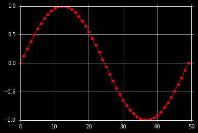
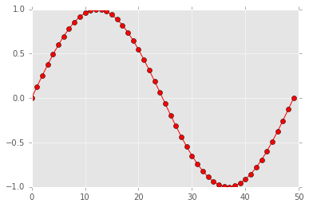

In [2]:
import numpy as np
import pandas as pd
import matplotlib
import matplotlib.pyplot as plt
%matplotlib inline
matplotlib.style.use("ggplot")
In [3]:
plt.style.available
Out[3]:
['seaborn-dark',
'seaborn-talk',
'classic',
'seaborn-white',
'fivethirtyeight',
'seaborn-ticks',
'seaborn-colorblind',
'seaborn-muted',
'seaborn-notebook',
'seaborn-dark-palette',
'seaborn-paper',
'seaborn-bright',
'seaborn-darkgrid',
'seaborn-poster',
'seaborn-deep',
'ggplot',
'dark_background',
'seaborn-pastel',
'grayscale',
'bmh',
'seaborn-whitegrid']
In [23]:
df = pd.DataFrame(np.random.rand(6), columns=["a"])
df.iloc[1]["a"] = np.nan
df.iloc[3:5]["a"] = np.nan
df
/Users/knt/.pyenv/versions/anaconda3-2.5.0/lib/python3.5/site-packages/ipykernel/__main__.py:3: SettingWithCopyWarning:
A value is trying to be set on a copy of a slice from a DataFrame.
Try using .loc[row_indexer,col_indexer] = value instead
See the caveats in the documentation: http://pandas.pydata.org/pandas-docs/stable/indexing.html#indexing-view-versus-copy
app.launch_new_instance()
Out[23]:
| a | |
|---|---|
| 0 | 0.050696 |
| 1 | NaN |
| 2 | 0.388775 |
| 3 | NaN |
| 4 | NaN |
| 5 | 0.227569 |
In [17]:
---------------------------------------------------------------------------
TypeError Traceback (most recent call last)
<ipython-input-17-72b44c061663> in <module>()
----> 1 df.shape()
TypeError: 'tuple' object is not callable
In [24]:
with plt.style.context(('dark_background')):
plt.plot(np.sin(np.linspace(0, 2*np.pi)), 'r-o')

In [25]:
plt.plot(np.sin(np.linspace(0, 2*np.pi)), 'r-o')
Out[25]:
[<matplotlib.lines.Line2D at 0x1198a3080>]
